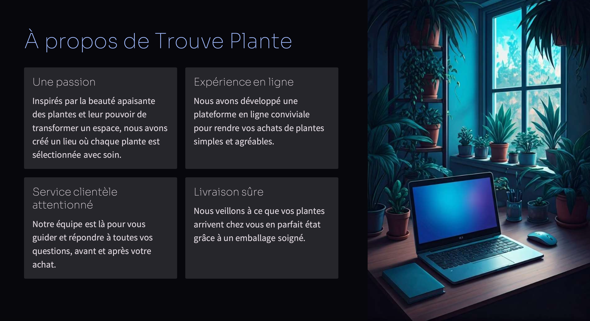
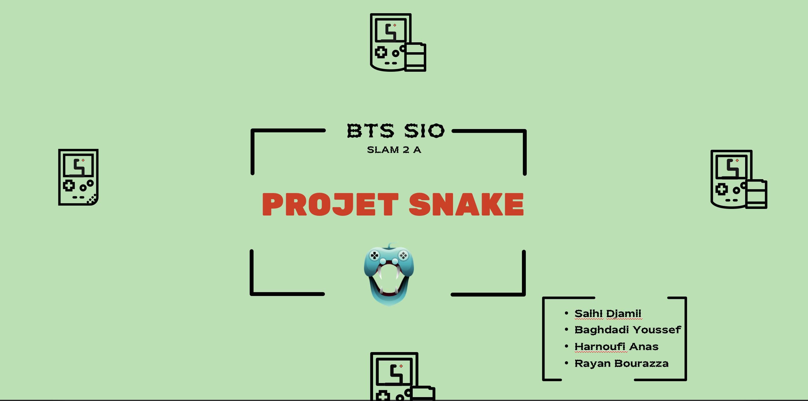
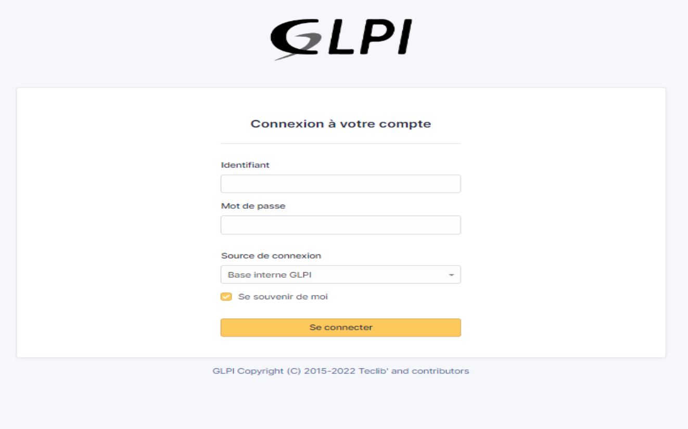
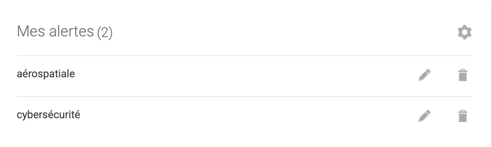

Aperçu de mes projets BTS SIO

PPE Auto-école

Boutique Shopify

Snake

E-Enseignement

Présentation de mon portfolio de Rayan Bourazza
Étudiant motivé et déterminé, je souhaite intégrer une troisième année afin de consolider mes compétences, approfondir mes connaissances et concrétiser mon projet professionnel.
Je m'appelle Bourazza Rayan, étudiant passionné par l'informatique, actuellement en BTS SIO. Curieux, motivé et déterminé, je cherche sans cesse à développer mes compétences, à relever de nouveaux défis et à m'investir dans des projets innovants. Mon objectif est de poursuivre dans le domaine de l'informatique, en consolidant mes acquis et en découvrant de nouveaux horizons professionnels.
Le BTS SIO (Services Informatiques aux Organisations) est un diplôme de niveau Bac+2 qui forme des spécialistes des solutions informatiques. Il propose deux options majeures :
La veille technologique désigne le processus de surveillance active des évolutions, des innovations et des tendances dans les domaines technologiques.
Elle permet de rester informé sur les nouvelles avancées, d'anticiper les opportunités, mais aussi de prévenir les risques ou les menaces liées à ces innovations.
La veille est un outil essentiel pour les entreprises et les professionnels, car elle contribue à la prise de décisions stratégiques, à l'innovation et à la compétitivité.
Dans le cadre de ma veille technologique, je me concentre sur deux secteurs majeurs :
Il est crucial de suivre les dernières tendances en matière de protection des données et des infrastructures. Les cyberattaques, la protection des informations sensibles, et la sécurité des systèmes sont au cœur des préoccupations des entreprises aujourd'hui.
Ce domaine connaît des innovations spectaculaires, notamment avec le développement des systèmes de navigation et de communication, la sécurité des réseaux satellitaires et les progrès en matière de technologie embarquée.
J'utilise plusieurs outils pour effectuer ma veille de manière efficace :
Ce service me permet de recevoir directement par mail des articles ou informations liés aux thèmes de cybersécurité et d'aérospatiale. Il est particulièrement utile pour rester à jour sur les dernières menaces et innovations.
Cette application me permet de rester informé sur les actualités, de plus, j'en apprends un peu plus sur les métiers dans l'aérospatiale grâce aux personnes que je follow, tel que Allan Petre.
Date de publication : Octobre 06, 2024
L'intelligence artificielle (IA) joue un rôle de plus en plus important dans la cybersécurité. Elle permet d'automatiser la détection des menaces, d'identifier les vulnérabilités des systèmes, et d'améliorer les réponses aux cyberattaques. Des entreprises comme IBM utilisent l'IA pour renforcer la sécurité à travers des solutions comme IBM Security QRadar.
En savoir plusDate de publication : Octobre 04, 2024
HANGZHOU, Chine--(BUSINESS WIRE)--Le 25 septembre, la 3e édition de la Global Digital Trade Expo « Digital Trade Night » s'est tenue à Hangzhou. Cet événement a mis en lumière d'importants projets de commerce numérique entre la Chine et le Kazakhstan, insufflant un élan constant à la coopération économique et commerciale entre les deux parties. Au cours de l'événement, la cérémonie de signature très attendue du « Projet clé de commerce numérique Chine-Kazakhstan » a été officiellement ouverte.
 En savoir plus
En savoir plus
Date de publication : Octobre 04, 2024
Le marché de l'UE, composé de 27 États membres, est le deuxième partenaire commercial mondial du Canada pour les biens et services, et le deuxième partenaire mondial du Canada en ce qui concerne l'investissement direct bilatéral, après les États-Unis.
Le 21 septembre 2024 marquait le septième anniversaire de l'entrée en vigueur provisoire de l'AECG.
En 2023, la valeur du commerce bilatéral de marchandises entre le Canada et l'UE s'est élevée à 126,5 milliards de dollars, soit une augmentation de plus de 65 % depuis 2016, avant l'entrée en vigueur de l'AECG.
En savoir plusAllan Petre est un expert reconnu dans le domaine de la cybersécurité, avec une spécialisation dans la protection des infrastructures critiques et la sécurité des systèmes informatiques. Il a notamment dirigé plusieurs projets visant à sécuriser les réseaux de communication dans des secteurs sensibles comme la finance et l'aérospatiale. Ses recherches sur l'utilisation de l'intelligence artificielle pour améliorer la détection des cybermenaces font de lui une référence dans ce domaine.
En savoir plus